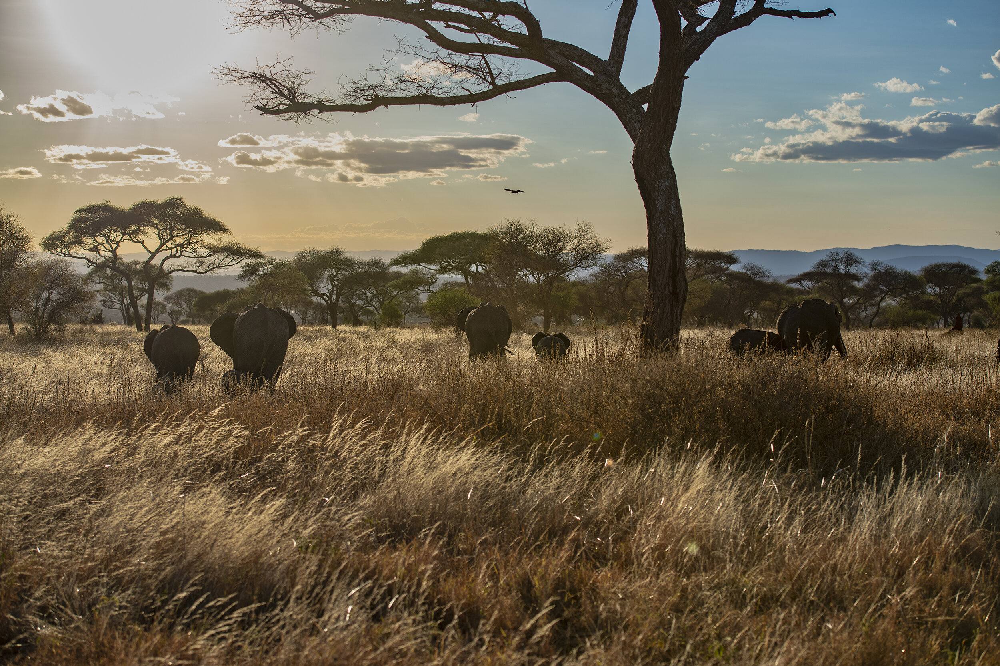
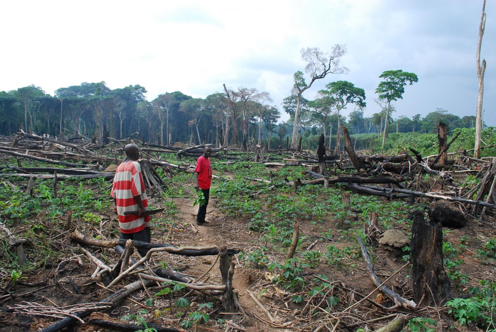
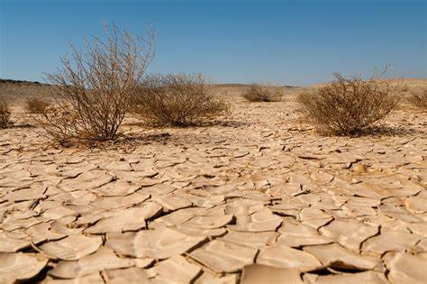
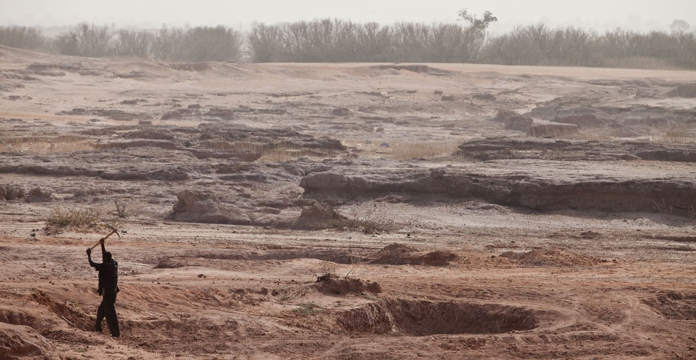

Sustainable practices play a crucial role in maintaining the health and balance of ecosystems, preserving biodiversity, and ensuring the overall well-being of the planet.
it include Ecosystem Health, Preservation of Biodiversity ,Climate Regulation ,Human well being , soil and water conservation
Consequences of deforestation

The Amazon Rainforest, often called the "lungs of the Earth," is home to about 10% of known species. Deforestation in the Amazon results in the extinction of numerous plant and animal species.
The clearing of forests contributes significantly to climate change. Deforested areas release stored carbon dioxide, a major greenhouse gas, into the atmosphere. The loss of trees also reduces the planet's capacity to absorb CO2.

Indigenous communities rely on forests for their homes, livelihoods, and cultural practices. Deforestation not only threatens their way of life but often leads to displacement and social disruption.
Forests play a vital role in regulating local and global water cycles. Deforestation disrupts these cycles, leading to altered precipitation patterns, increased flooding, and decreased water quality.
Real-world case study :- The deforestation rate in the Brazilian Amazon has surged, impacting the region's ecosystems. This has led to increased carbon emissions, loss of biodiversity, and conflicts with indigenous communities.
Consequences of desertification

Desertification transforms productive land into arid, unproductive areas. Globally, about 12 million hectares of land are lost to desertification annually, affecting agriculture and food security.
The Sahel region in Africa is experiencing desertification, leading to the loss of diverse plant and animal species. This contributes to the endangerment of iconic wildlife like the addax and dama gazelle.

Desertification often results in the migration of communities as they search for arable land and water. This movement can lead to conflicts over scarce resources, exacerbating social and political tensions.
Desertification threatens the livelihoods of over one billion people who depend on agriculture. In areas like the Middle East, prolonged droughts and desertification have severe economic consequences.
Real world case study:- The Sahel region's ongoing desertification crisis has led to increased poverty, food insecurity, and conflicts over diminishing resources, affecting countries like Chad, Niger, and Mali.
Consequences of land degradation

Land degradation diminishes soil fertility, leading to lower crop yields. Globally, 25% of agricultural land is highly degraded, affecting food production for a growing population
Land degradation contributes to water scarcity by reducing the land's ability to retain water. This affects not only agriculture but also water supplies for communities and ecosystems.
Real world Case study:-China's Loess Plateau has experienced severe land degradation due to unsustainable agricultural practices. Restoration projects have been implemented to combat soil erosion and improve the ecosystem's resilience